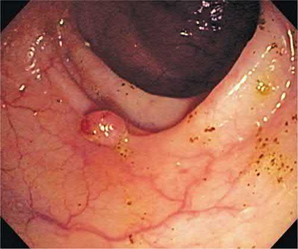
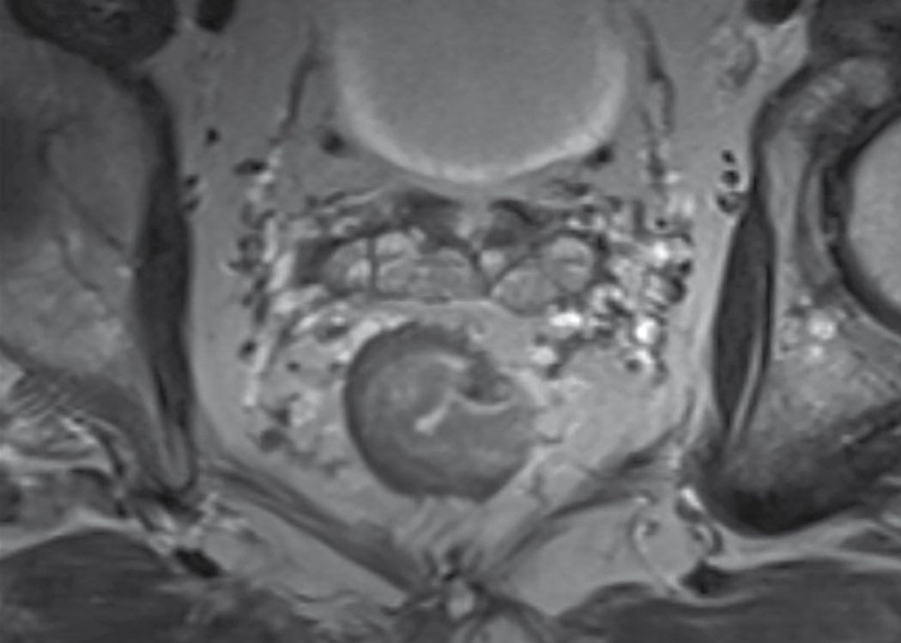
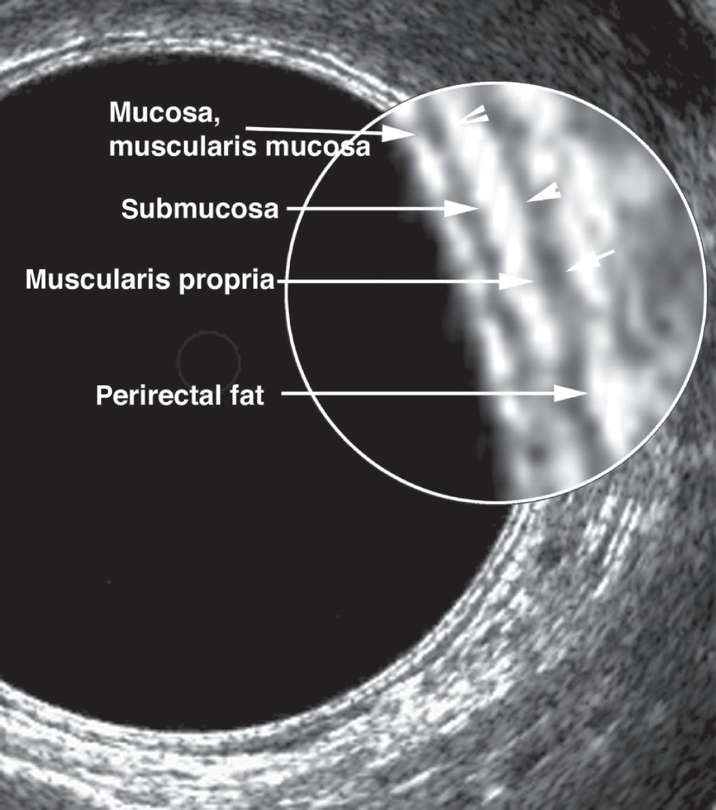
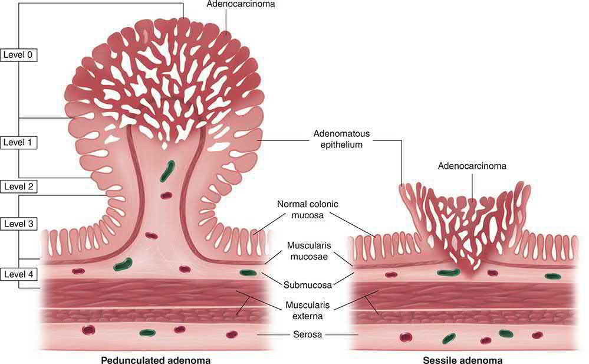
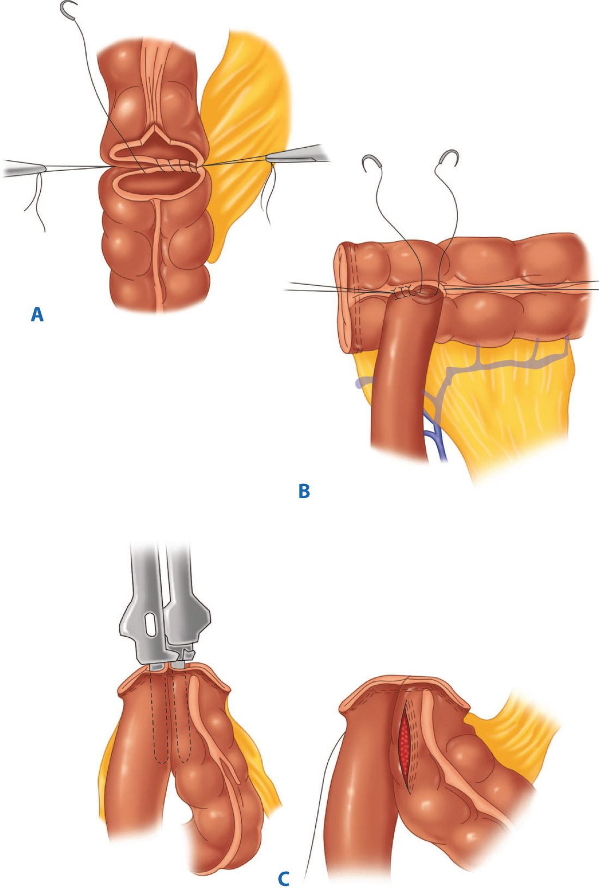

Colorectal Cancer
Summary
- Colorectal cancer (CRCa) is the second commonest cause of cancer death and the commonest gastrointestinal malignancy in the UK, arising predominantly through an adenoma–carcinoma sequence driven by accumulating genetic mutations [1].
- Around one-third of tumours occur in the rectum and two-thirds in the colon, with a male predominance [1].
- Presentation depends on tumour site, left-sided lesions typically cause a change in bowel habit or rectal bleeding, while right-sided lesions present with iron-deficiency anaemia or a mass, and up to 40% present as an emergency with obstruction, perforation or bleeding [1][2].
- Surgical resection with lymphadenectomy remains the only curative treatment, increasingly combined with neoadjuvant/adjuvant therapy and minimally invasive techniques [1].
Definition
Colorectal cancer is a malignant neoplasm, almost always an adenocarcinoma, arising from the epithelium of the colon or rectum [3]. It may occur as a polypoid, ulcerating, stenosing or infiltrative tumour mass [1].
Pathophysiology
- Most colorectal cancers develop from adenomatous polyps through a sequence of genetic mutations influenced by environmental factors, the adenoma–carcinoma sequence [1].
- Mutations of the APC gene occur in two-thirds of colonic adenomas and are thought to arise early in carcinogenesis; K-ras mutations activate cell-signalling pathways and are more common in larger lesions (later events); the p53 gene is frequently mutated in carcinomas but not adenomas, marking invasion [1].
- An international consortium has identified four consensus molecular subtypes (CMS1–4) based on gene-expression profiling, including microsatellite-instability (MSI)-driven tumours (CMS1, often right-sided), WNT/MYC activation (CMS2), metabolic dysregulation (CMS3) and TGF-β activation (CMS4) [1].
- Evidence supporting the adenoma–carcinoma sequence includes the similar distribution of adenomas and cancers (70% left-sided), the greater dysplasia of larger adenomas, adjacent adenomatous tissue in most early cancers, and reduced cancer incidence within colonoscopic screening/polypectomy programmes [1].

Colonic cancer spreads locally (longitudinally or radially, into retroperitoneal or intraperitoneal structures), via lymphatics (progressing from bowel-wall nodes to central nodes), haematogenously (most commonly to the liver via the portal vein (one-third have liver metastases at diagnosis, 50% develop them eventually) then lung, ovary, brain, kidney, bone), and transcoelomically across the peritoneal cavity [1]. For rectal cancer, local spread is circumferential into the mesorectum, initially contained by the mesorectal fascia; lymphatic spread above the peritoneal reflection is upward, but low tumours within the field of the middle rectal artery can spread laterally to pelvic-wall nodes in ~20% of cases; venous spread is chiefly to liver (34%), lung (22%) and adrenals (11%) [3].
Clinical features
- Carcinoma of the colon typically occurs after age 50, most commonly in the eighth decade; emergency presentation (20% of cases) carries a substantially worse prognosis even after stage-matching [1].
- Left-sided tumours usually present with change in bowel habit or rectal bleeding; proximal (right-sided) lesions typically present with iron-deficiency anaemia or a palpable mass [1].
- By site [2]:
- Rectal: PR bleeding (deep red, on the surface of stools), change in bowel habit, tenesmus.
- Descending/sigmoid: PR bleeding (dark red, mixed with stool), increased frequency, mucus, bloating.
- Right-sided: iron-deficiency anaemia may be the only presenting feature.
- Emergency presentations (up to 40%): large bowel obstruction, perforation with peritonitis, acute PR bleeding.
Rectal cancer pain is a late symptom, from obstruction of the rectosigmoid or invasion of the sacral plexus/prostate/bladder; weight loss is also late and usually signifies metastatic disease [3]. On digital rectal examination, a tumour within 7–8 cm of the anal verge is felt as an elevated, irregular, hard mass; mobility, tethering or fixity and distance from the anal sphincher should be assessed [3].
Etiology
- Predisposing factors include polyposis syndromes (familial adenomatous polyposis [FAP], Lynch syndrome, juvenile polyposis), a strong family history, previous polyps or colorectal cancer, chronic ulcerative colitis or colonic Crohn's disease, and a diet low in fruit and vegetables [1].
- Colorectal cancer prevalence correlates with intake of red and processed meat; dietary fibre appears protective, and there is increasing evidence linking colonic microbiota, inflammation and gene methylation to carcinogenesis; smoking and alcohol increase risk, while aspirin and other prostaglandin inhibitors show a protective epidemiological association [1].
- Cholecystectomy may marginally increase right-sided colon cancer risk [1].
FAP is an autosomal dominant condition caused by mutation of the APC gene on chromosome 5, defined by >100 colorectal adenomas, with colorectal cancer risk approaching 100% by age 35–40 if untreated; it is associated with duodenal/gastric polyps, desmoid tumours, osteomas and CHRPE (congenital hypertrophy of the retinal pigment epithelium), the latter combination termed Gardner's syndrome [1][5]. Lynch syndrome (hereditary non-polyposis colorectal cancer, HNPCC) results from mutation of a DNA mismatch-repair gene (MLH1, MSH2, MSH6 or PMS2), producing microsatellite instability (MSI) and an accelerated adenoma–carcinoma sequence; lifetime colorectal cancer risk is up to 70–80%, with most cancers proximal, and affected women carry a 30–50% lifetime risk of endometrial cancer [1][6]. Diagnosis has historically relied on the Amsterdam II clinical criteria [1][6].
Diagnosis
Screening: in the UK, screening (historically guaiac faecal occult blood testing, now the faecal immunochemical test [FIT]) is offered every two years to those aged 60–74, reducing colorectal cancer-specific mortality by 15–20%; a one-off flexible sigmoidoscopy at age 55 has also been used [1]. NICE 2-week-wait referral criteria include unexplained weight loss and abdominal pain (age ≥40), unexplained rectal bleeding (age ≥50), and iron-deficiency anaemia, change in bowel habit, or faecal occult blood (age ≥60), or a rectal/abdominal mass at any age [2].
Endoscopy: colonoscopy is the investigation of choice, providing histological diagnosis and detecting synchronous polyps/carcinomas (3–5% of cases), with a small perforation risk (1:1000); flexible sigmoidoscopy detects up to 70% of cancers and almost all causing fresh rectal bleeding [1]. Rigid sigmoidoscopy or proctoscopy may be used for rectal lesions [2].
- Radiology and staging: CT colonography has largely replaced barium enema; CT of thorax/abdomen/pelvis is standard for metastatic staging, while pelvic MRI is required for local staging of rectal cancer, assessing mesorectal fascia involvement [1].
- Endorectal ultrasound differentiates the five-layer rectal wall, distinguishes T1–2 from T3–4 disease (accuracy 81–94%) and detects perirectal nodes (58–83% accuracy) [6].
- CEA is not useful for diagnosis or screening but is used to monitor for relapse if elevated preoperatively and normalising after resection [1].


Scoring and Severity
Dukes' classification (originally for rectal cancer, later applied to colon cancer): A (confined to the bowel wall (75–90% 5-year survival); B) through the bowel wall, nodes negative (55–70%); C, regional lymph nodes involved (30–60%), subdivided into C1 (pararectal nodes only) and C2 (nodes to the origin of the supplying vessel); D (not part of Dukes' original description) denotes distant metastases (5–10%) [1][2].

- TNM staging (UICC 8th edition) is now the internationally recognised standard: T1 submucosa, T2 muscularis propria, T3 subserosa/pericolic fat, T4a visceral peritoneum, T4b adjacent organ; N1 (1–3 nodes)/N2 (≥4 nodes); M1a (one organ), M1b (>1 organ), M1c (peritoneum) [1].
- Stage grouping: Stage I = T1–2N0; Stage II = T3–4N0; Stage III = any T with node-positive disease; Stage IV = distant metastasis [6].
- Histological grading (well/moderately/poorly differentiated) and adverse features such as vascular/perineural invasion, an infiltrating margin and tumour budding carry independent prognostic weight; signet-ring adenocarcinoma grows rapidly, metastasises early and carries a poor prognosis [3].
Treatment and Management
- Management is planned within a multidisciplinary team, taking into account patient fitness, tumour stage and patient preference [3].
- Enhanced recovery after surgery (ERAS) programmes, combining preadmission counselling, carbohydrate loading, avoidance of NG tubes and opiates, short incisions, early mobilisation and early oral intake, reduce length of stay from 10–14 days to as little as 3–5 days [1].
- Preoperative mechanical bowel preparation combined with oral antibiotics reduces surgical site infection, anastomotic leak, ileus and reoperation [1].
- For rectal cancer, neoadjuvant long-course chemoradiotherapy (5 fractions/week over 6 weeks with concurrent chemotherapy) is used for locally advanced tumours threatening the circumferential resection margin, aiming to downstage and achieve clear margins; short-course radiotherapy (5 days) is used where margins are not threatened but local recurrence risk is high (e.g. perirectal nodal disease) [3].
- Around 20% achieve a complete clinical response and may be offered non-operative "watch and wait" surveillance (Habr-Gama), with ~30% recurring, most salvageable by surgery [3].
- Adjuvant chemotherapy (fluoropyrimidine-based, with oxaliplatin in high-risk fit patients) is recommended for node-positive (Dukes' C/Stage III) colon cancer; benefit in Stage II disease is less clear and MSI-high Stage III tumours may not benefit from 5-fluorouracil-based regimens [1][6].
- Palliative options for unresectable disease include chemotherapy, endoluminal stenting of obstructing tumours, or palliative resection [1].
- Resectable liver or lung metastases can achieve long-term survival in over a third of patients [1].
Surgeries
- Right/extended right hemicolectomy: for caecal, ascending colon, hepatic flexure and proximal transverse colon tumours; the ileocolic artery is ligated close to its origin ('high tie'); complete mesocolic excision with flush ligation of ileocolic/right colic vessels may improve survival in node-positive disease [1].
- Left hemicolectomy: for descending and sigmoid tumours; the inferior mesenteric artery is ligated close to its origin distal to the left colic branch [1].
- High/low/ultra-low anterior resection: for rectosigmoid, upper, middle and lower rectal tumours, performed with total mesorectal excision (TME) for middle/lower-third tumours, sharply dissecting along embryological planes with preservation of pelvic autonomic nerves; TME reduces local recurrence, improves survival, and causes less blood loss and nerve injury than blunt dissection [3][6]. A temporary defunctioning loop ileostomy is usual for anastomoses below the peritoneal reflection given the higher leak risk [1].
- Abdominoperineal excision (APER): for very low rectal/anal-canal tumours not amenable to sphincter preservation, with permanent colostomy [3].
- Local excision (TEMS/TAMIS): full-thickness transanal excision for early (T1, selected T2) low-risk cancers, preserving the rectal reservoir; positive-node risk left behind ranges from ~10% (T1) to 20% (T2) [3].
- Laparoscopic and robotic surgery: equivalent oncological outcomes to open surgery with lower blood loss, wound infection and pain, at the cost of longer operating times and higher expense; robotic assistance may reduce conversion rates in pelvic (rectal) surgery [1].
- Emergency surgery: right-sided obstructing lesions are usually resected with primary anastomosis; left-sided obstruction is managed by Hartmann's procedure, resection with on-table lavage and primary anastomosis, or palliative colonic stenting as a bridge to surgery or definitive treatment [1].

Complications
Anastomotic leak (4–8% for ileocolic/colocolic anastomoses, higher for low pelvic anastomoses, up to 15%), wound infection, postoperative bleeding, ischaemia of the anastomosed bowel, anastomotic stenosis, pouchitis (in restorative procedures) and anterior resection syndrome (urgency, incontinence, incomplete evacuation from loss of the rectal reservoir) are recognised complications [1][2]. Stoma complications include ischaemia, retraction, prolapse, stenosis, parastomal hernia and skin irritation [1].
Prognosis
- Prognosis correlates closely with Dukes'/TNM stage: 5-year survival is 75–90% for Dukes' A, 55–70% for B, 30–60% for C, and 5–10% for D (metastatic) disease [1].
- Emergency presentation is an independent marker of worse prognosis even after stage-matching [1].
- MSI-high status predicts a better prognosis stage-for-stage but reduced benefit from 5-fluorouracil-based adjuvant chemotherapy [6].
References
- Bailey & Love's Short Practice of Surgery, 28th ed., Ch. 77 and Ch. 79 The rectum
- Oxford Handbook of Clinical Surgery, 5th ed., Ch. 12 Colorectal surgery
- Bailey & Love's Short Practice of Surgery, 28th ed., Ch. 79 The rectum
- Maingot's Abdominal Operations, 13th ed., Ch. 5
- The ABSITE Review, 2022
- Schwartz's Principles of Surgery: ABSITE and Board Review, Ch. 29
- Sabiston Textbook of Surgery, 22nd ed., Ch. 96
- Maingot's Abdominal Operations, 13th ed., Ch. 54